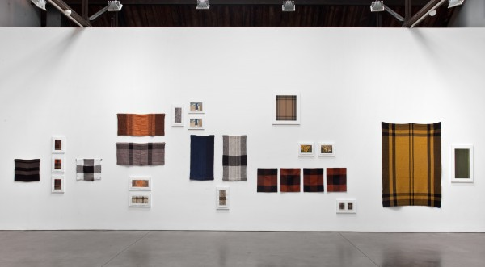
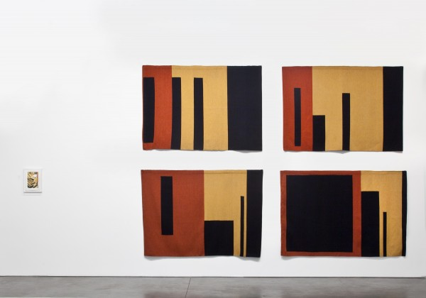

-
Fluid Panel State
by Jimmy Stamp September 25, 2012
installation shot of Zittel’s ‘Fluid Panel State,’ Andrea Rosen Gallery, New York.
Andrea Zittel’s work challenges our dogmatic acceptance of social constructs by blurring the boundaries between art and life. This blurring manifests not as an abstract re-presentation of reality, but as a practical reconsideration of common objects and everyday experience. These inquiries have taken the form of things as simple as clothing — Zittel has been making her own seasonal “uniforms” since 1991 — and, perhaps most notably, architectural space. In the 1990s, she designed a built a series of compact multi-functional living units that resembled classic steamer trunks as if designed by Charles and Ray Eames. When opened, the living units expand to accommodate Zittel’s every living function — cooking, eating, working, washing, and sleeping. The living units ask users to question labels such as “kitchen” or “bedroom” as well as the basic necessities of dwelling. For Zittel, they were part of a search for a distilled, controllable mode of living. Fluid Panel State, Andrea Zittel’s tenth exhibition at Andrea Rosen Gallery, continues that search with what may be the most refined iteration of the artist’s twenty-year inquiry into the relationship between design and the everyday environment.
I’ve always been particularly taken with Zittel’s more architectural or spatial work, and I admit to being somewhat disheartened when I stepped into a the open space of the recently expanded Andrea Rosen Gallery and saw no Living Units, Accumulators, Wagon Stations, Escape Vehicles, or any other architectural installation. Instead, the walls of the gallery are adorned with woven panels, drawings, and paintings; abstracted images created in the rust and amber hues of the season. Thankfully, it didn’t take long to realize that my initial reaction was wrong. Fluid Panel State is high-concentrate Zittel.
As the name implies, Fluid Panel State is an investigation into the nature of the flat plane or “panel.” It may seem like an overly simple subject, but that’s the point. Zittel is working to encapsulate her thinking into a more efficient form. Critiquing her own previous work, the artist commented that she tended to “bring in everything but the kitchen sink.” In fact, some pieces actually included the kitchen sink. Zittel was concerned that she just kept “packing it in.” The “it” being the apparatuses of living. Her challenge then, was to some a more efficient vehicle for her ideas; to distill living not just spatially, as with the Living Unit series, but conceptually. Her solution was the woven wool panel. Though Zittel took weaving classes to learn the craft, she knew that to realize the large-scale works on display, she’d need talented professionals equipped with 60-inch looms, and so the artist, whose work is often very personal, even isolating, developed many of her pieces with a community of artisans from around the country.

Zittel’s ‘Prototype for Billboard: A-Z Cover Series 1 (Gold and Black Stripes),’ 2012.
The covers, dresses, and ponchos, that resulted from this collaboration are imbued with a richness when re-contextualized in the gallery as “panels.” In context of the exhibition, these panels function as both subject and medium. The delightfully polysemic nature of “panel” lends itself to a variety of interpretations and forms. It can be two-dimensional or three-dimensional. It can be discursive or concise. It exists somewhere between painting and sculpture; between functional object and decorative ornament. This uncertainty, a hallmark of Zittel’s work, makes the “fluid panel state” — the moment a panel is activated by use — possible.
The fluid state is a liminal threshold where a panel is charged with a new potential. Take, for instance, the various representations of the black, and gold wool panels that compose up A-Z Cover Series 1 (Gold and Black Stripes). The woven panels are an abstract index of their own creation. Their colored stripes denote passing of time, with each stripe representing a new weaving session or the beginning of a new day. Accompanying the series is a triptych of small, beautifully rendered gouaches that reveal the latent forms of Cover Series 1, making its fluid nature explicit with illustrations of abstracted bodies moving under and through the panels, animating them and creating unexpected, dynamic shapes. Similar drawings of other panels show more domestic uses of the flexible panel: a curtain, carpet, and cover. There’s something almost child-like about these possibilities. After all, in the hands of a child, does not the flexible panel — a blanket, essentially — become a fort, a cave, a sail, or cape?
These illustrations were conceived of as advertisements for the work, but have the quality of a comic book panel. This is made explicit with a larger piece, Prototype for Billboard; A-Z Cover Series 1 (Gold and Black Stripes), a painting of A-Z Cover Series 1 (Gold and Black Stripes) on a single plywood panel. The rigidity of the plywood brings new qualities to the work, imbuing it with the capacity to carry and transmit meaning. What exactly that meaning is, however, is difficult to say. Though rigid, the panel-as-sign carries as many different ideas as the textiles. Prototype for Billboard is a representation of three-dimensional space — the painted depiction of Cover Series 1 is rumpled, as if someone had just walked over it — and, as a painting of the actual woven Cover Series 1, it is also an abstraction of a real thing. But of course, the painted plywood panel is itself a very real object that carries commercial implications associated with its identification as a billboard. While such a billboard may appear to only advertises Zittel’s work, it also freezes a single moment in time. Perhaps it was the time you tripped over the rug? Or the time your lover stormed out of the apartment? As with the gouache illustrations, there are countless unspoken narratives in this sign.
installation shot of Zittel’s ‘Fluid Panel State,’ Andrea Rosen Gallery, New York.
It’s clear that Zittel’s panels have the capacity to be constantly redefined by use and context. It’s a strong concept and an elegant evolution of her previous work. The only qualm I have with the show is the way these works are exhibited. In the context of the gallery, the panels take on the form of a painting or sculpture. However, I can’t help but wish the panels themselves were hung in a way to made their versatility explicit without relying completely on the illustrations, elegant as they are. Although the gallery context may transform the woven panels into “fine art”, it also limits our understanding of them. They become, in many ways, lifeless, their fluid state dormant. Though beautifully made, the panels themselves remain abstractions of possibility. I want to see those possibilities. Like a child playing under blankets, my imagination was ignited by the possible latent uses of the panels relative to my own dwelling and, of course, relative to Zittel’s previous work. I imagine a Living Unit that can only be complete with the addition of a flexible panel. But this is a small complaint and a personal one. Perhaps I’m merely falling into the kitchen-sink trap from which Zittel has, with this exhibition, successfully escaped. Nonetheless, the nearly unmitigated flatness of the exhibited work obfuscates the fluid nature intrinsic to subject.
By the time I left the gallery, I realized that the work was, in fact, architectural. Indeed, the panel — be it flexible or rigid — is one of the most basic elements of architecture. Eighteenth century architecture theorist Marc-Antoine Laugier distilled the essence of architecture into a now-famed illustration of the “primitive hut,” a theoretical ur-building formed from natural elements: the trunks and canopies of trees. More than 150 years later, famed modernist architect Le Corbusier further distilled and abstracted architecture with his “Dom-ino” structure, which broke architecture down into two basic constructed elements: the column and the slab. Taking a cue from these two theorists, Fluid Panel State could be read as a further distillation of architectural form. As Zittel transforms the architectural slab into a flexible panels, the users — the bodies that shape the panels — become columns. The art object reveals the body as a functional object and the body, through its interaction with Andrea Zittel’s panels, not only activates space, but creates it.
Fluid Panel State runs through October 27, 2012 at Andrea Rosen Gallery.
all images courtesy of Andrea Rosen Gallery